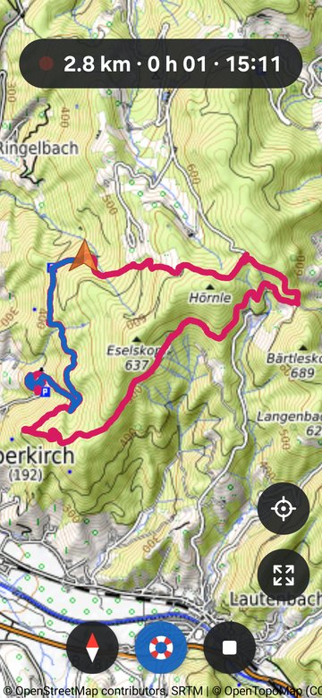
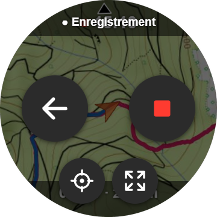
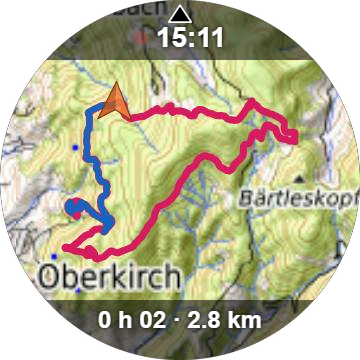

What it does
Your track on a hiking map
Load the track of your hike. A car marks where it starts.
Get to the start
A long press on the map opens directions in Google Maps.
Never get lost
The lifebuoy vibrates when you stray from the track.
Record your hike
Keep the track you walked, and share it.
On your watch
The map, where you are, north, the sun with the sunset time and the moon, with the phone in your pocket.
The map is OpenTopoMap, a hiking map that covers France, Germany and the rest of the world.
Screenshots







Get started
Install on the phone
- On the phone, tap Download for Android.
- Open the downloaded file and tap Install. If Android or Play Protect asks, allow it.
- When BLRando asks for your location, choose Allow all the time.
Updates: when a new version is out, BLRando offers it when you open it. Tap Update.
Connect the watch (optional)
- On the phone, turn on the mobile hotspot, set to 2.4 GHz. No mobile network needed.
- Connect the watch to this hotspot (watch settings > Connections > Wi-Fi).
- In BLRando, tap the time at the top: it shows an address such as
10.1.2.3:8765. - On the watch, open Internet, type this address, add it to the bookmarks, then tap Open the map.
Next times: hotspot on, BLRando open, then open the bookmark on the watch. You need a Samsung Galaxy Watch with Samsung's Internet browser, for example the 2018 Galaxy Watch.
The buttons
More tips (removing a track, alerts, two watches…): advanced use.
Your privacy
BLRando has no account and collects nothing about you. The phone only talks to the watch through its own hotspot, never on a shared Wi-Fi.